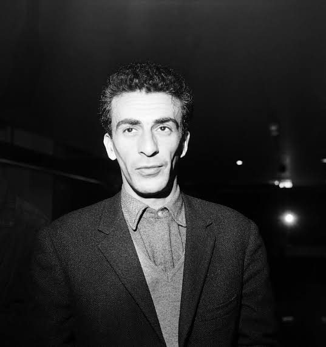

Que se passe-t-il quand une stratégie politique est testée par celui-là même à qui elle s’adresse ?
L’hypothèseLe Manifeste du peuple algérien, signé par vingt-huit élus, réclame une constitution, l’égalité, un État algérien. Toute la stratégie de Ferhat Abbas tient sur une hypothèse, une seule : la France a des principes, elle les trahit en Algérie, et on peut l’y ramener par le droit. La méthode est là : il rédige, il adresse, il attend une réponse.
L’armée. L’aviation, qui bombarde les villages insurgés. Et depuis la baie de Bougie, un croiseur qui tire sur la côte kabyle.
Le sous-préfet arme des milices de colons. Elles arrêtent, jugent et exécutent sans tribunal, pendant des semaines.
L’administration ne subit pas le débordement de ses administrés : elle organise elle-même l’épuration, avec ses fonctionnaires et ses armes.
On ne compte pas les morts qu'on n'avait jamais pris la peine d'inscrire.
Le drapeau sort, le policier tire, la foule se retourne. La répression commence dans le Constantinois.
Il se présente avec le docteur Saâdane pour offrir, au nom des Amis du Manifeste, ses félicitations pour la victoire alliée. Il ignore tout de ce qui vient de se produire.
Mis au secret, il n’apprendra les événements du Constantinois que deux semaines plus tard. Le 14 mai, les Amis du Manifeste sont dissous. Il restera en prison jusqu’en mars 1946.

Il manifeste. Quatorze membres de sa famille sont tués. Il est arrêté trois jours plus tard, détenu deux mois. Ce que Sétif produit, avant la colère, c’est un savoir : demander ne suffit pas.
Il fonde l’Union démocratique du Manifeste algérien. La méthode réfutée en mai 1945 est reprise, à peine un an plus tard.
Le Mouvement pour le triomphe des libertés démocratiques, celui de Messali Hadj, arrive en tête ; l’Union démocratique du Manifeste algérien suit. La voie légale fonctionne, et le résultat sidère l’administration française, qui décide aussitôt que cela ne se reproduira pas.
Huit mois avant ces municipales, le parti de Messali se dote d’une branche clandestine armée. En 1951, après le démantèlement policier de son réseau, c’est le parti lui-même qui la dissout. L’instrument armé avait été construit, et il a été posé.
Sur les soixante sièges du second collège : quarante et un vont à des candidats de l’administration, neuf au Mouvement pour le triomphe des libertés démocratiques, huit à l’Union démocratique du Manifeste algérien. Plus des deux tiers des sièges sont faussés.
La fraude est si massive que l’expression « élection algérienne » entre dans la langue courante pour désigner un scrutin volé.
Neuf ans, trois scrutins, et à chaque fois une décision : prise par quelqu’un, à un moment précis, depuis la métropole.
En novembre 1954, par une poignée d’hommes pressés, réunis dans un parti en pleine scission, et contre l’avis de leur propre direction.
Dire que Sétif rendait la guerre inévitable, c’est transformer une décision en destin. C’est ce que Mohammed Harbi, ancien cadre du Front de libération nationale devenu historien, a passé sa vie à démonter : là où l’on croit voir une fatalité, il montre des hommes qui délibèrent, et qui auraient pu conclure autrement.
Je vous ai donné la paix pour dix ans ; si la France ne fait rien, tout recommencera en pire et probablement de façon irrémédiable.
Neuf ans et demi plus tard, le 1er novembre 1954. La France n’avait rien fait.
En mai 1945, la stratégie réformiste est éprouvée par celui-là même à qui elle s’adressait. La réponse tombe : demander ne suffit pas.
Elle dit seulement ce qui ne marche pas. Elle ne prescrit rien : neuf années de tentatives et trois scrutins volés séparent 1945 de 1954.
Dire que Sétif rendait la guerre inévitable, c’est transformer une décision en destin — le récit que Harbi a passé sa vie à démonter.